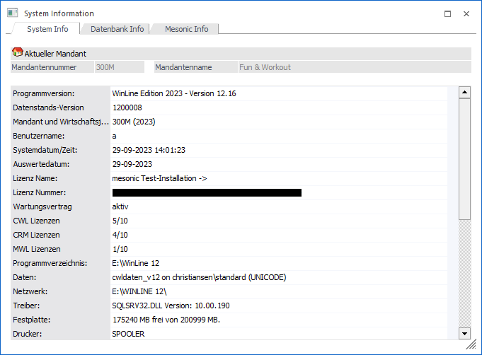

Die System Info kann in jeder Applikation über den Menüpunkt
1 Datei
1 System Info
geöffnet werden. Dieses Fenster zeigt den gegenwärtigen Zustand verschiedenster Systemparameter an, z.B. welcher Mandant zurzeit in Bearbeitung steht und wo der Mandant und die Applikation auf der Festplatte lokalisiert sind, ob eine Lizenz eingespielt wurde bzw. wann die Demolizenz abläuft (jedes Programm ohne gültige Echtlizenz ist vom Zeitpunkt der Installation 2 Monate lang zur vollen Bearbeitung freigegeben).
Hinweis
Eine Echtlizenz kann im WinLine ADMN über "Datei - Lizenz eingeben" eingetragen werden.
Außerdem wird angezeigt, wie viel Kapazität auf der Festplatte noch verfügbar ist, welcher Drucker gerade aktiv ist und mit welcher Programmversion gegenwärtig gearbeitet wird.

Das Fenster ist in die folgenden 3 Register untergliedert, welche in den folgenden Kapiteln detailliert beschrieben werden:
ü Register "System Info"
In diesem
Register werden Lizenzinformationen und allgemeine Systemparameter angezeigt.
ü Register "Datenbank Info"
Hier
erhält man nähere Informationen über die Soft- und Hardwareumgebung (bezogen auf
den aktuellen Mandanten).
ü Register "Mesonic Info"
In diesem
Register werden die Adressen und Telefonnummern aller mesonic-Niederlassungen
aufgelistet.
Buttons
Ø Ende
Durch Anwahl des Buttons "Ende" bzw. der Taste ESC wird die Info geschlossen.
Ø mit WinLine Server verbinden (nur im Register "System Info")
Mit Hilfe des Buttons "mit WinLine Server verbinden" kann eine fixe Verbindung mit dem WinLine Server hergestellt werden (der Benutzer ist damit per Session mit dem WinLine Server verbunden). Der Button wird auf inaktiv gesetzt, sobald die Verbindung erfolgreich hergestellt wurde.
Hinweis
Der aktuelle Verbindungsstatus kann der Zeile "WinLine Server" (Register "System Info") entnommen werden.